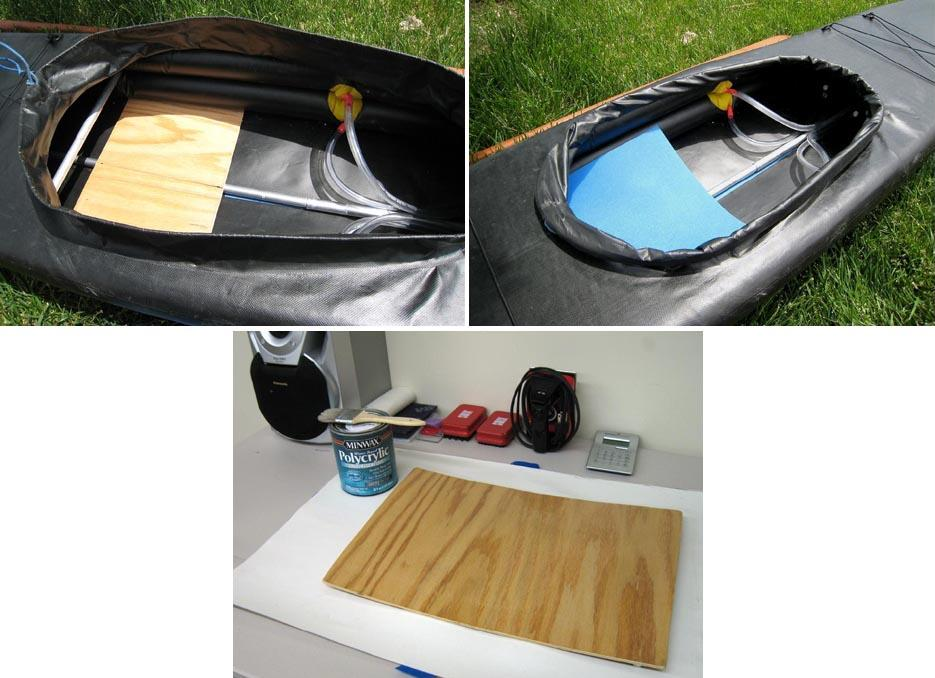

| Sonnet Seat | Menu Previous Page Next Page |
|

The Sonnet seat is made of 3/16" (4.8mm) plywood. It fits over the keel and under the sponsons and is held firmly in place when the sponsons are inflated. A 1/2" (13mm) closed cell foam pad provides additional comfort. The seat is finished with 2 coats of urethane. (Continued Below)
Sonnet 16 - Length Front - 17.5", Length Rear - 17", Width 12" (445mm, 432mm, 305mm) |
|